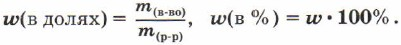
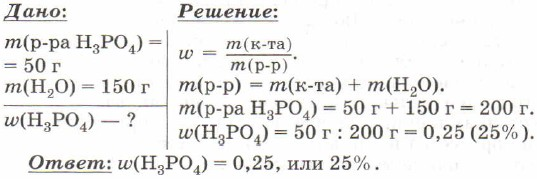
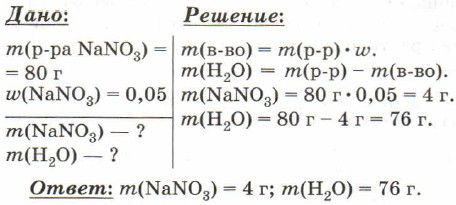

Отношение массы растворённого вещества к общей массе раствора называют массовой долей
растворённого вещества.
Массовую долю обозначают латинской буквой w («дубль-вэ») и выражают в долях единицы или
процентах:

Задача 1. В 150 г воды растворили 50 г фосфорной кислоты. Найдите массовую долю кислоты в
полученном растворе.

Задача 2. Сколько граммов воды и нитрата натрия нужно взять, чтобы приготовить 80 г 5%-го раствора?
